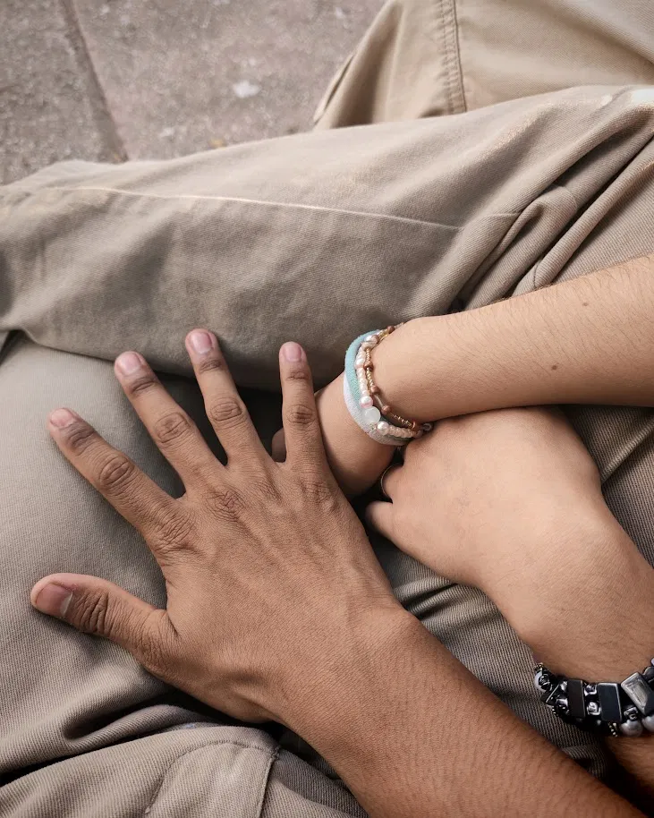
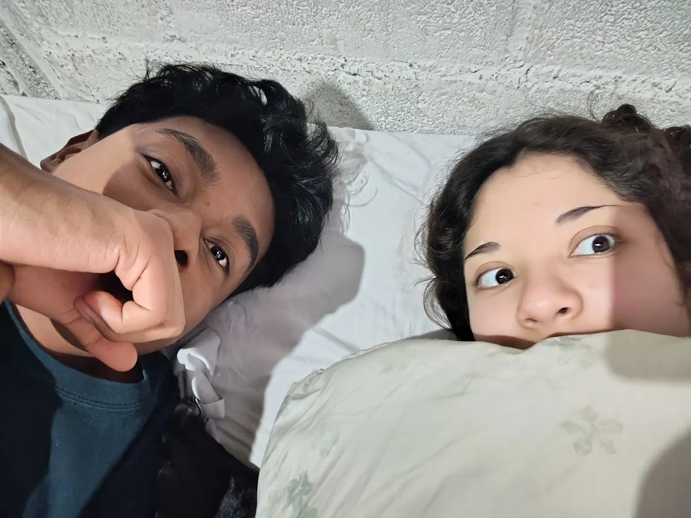

Vigilia en la Cámara del Veintiocho de Junio
28 de junio de 2026
IIgnoraba el dictado de los astros y las horas muertas, desconocía que aquel veintiocho de junio el cosmos celebraba el descenso de tu alma a este mundo de ceniza. Nos encerramos en aquella cámara, lejos del carrusel de los vivos, dejando que las sábanas emularan el lino de un sepulcro compartido donde el tiempo se detuvo a contemplar tu anatomía. Fue en la penumbra de ese refugio donde caí de rodillas, no ante el diseño perfecto de tu carne o la simetría de tus hombros, sino ante el verdadero santuario: tu mente y tu gótica forma de ser. Al alba del veintinueve, poseído por el peso de tu esencia, te pedí que gobernaras mis sombras bajo el título de novia y dueña, sin saber que el día anterior la muerte había perdido su corona ante tu nacimiento. Hoy regreso al osario de mis recuerdos a venerar la fecha. Que tu caja torácica sea el carruaje victoriano que transporte mi devoción, y tus costillas los barrotes finos de una jaula donde deseo asfixiarme. Feliz retorno a la vida, mi soberana; prefiero el cautiverio perpetuo entre tus entrañas y tu intelecto, que un siglo de libertad lejos del frío y perfecto templo de tu ser.

